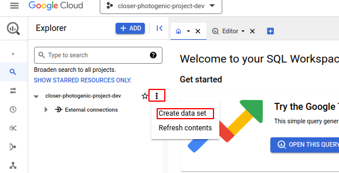
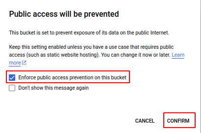

Load a file from Cloud Storage to a Bigquery Table using a Cloud Function¶
- Load a file from Cloud Storage to a Bigquery Table using a Cloud Function
- Introduction
- Tasks
- Create the Google Cloud Resources
- Cloud Function
- Ingest the data
- Documentation
Introduction¶

In this exercise, we will create the Ingest Data Cloud Function, that will perform the following tasks:
-
The
Ingest Datafunction will actively monitor the[YOURNAME]-lzGoogle Cloud Storage bucket for new files. This is achieved by configuring a trigger topic (PubSub) in the Cloud Function to listen for object creation events in the specified bucket. -
When a new file is detected, the
Ingest Datafunction will read the contents of the file and write the data into a BigQuery table namedTitanic Raw. The function will leverage the BigQuery Python client library to facilitate this process, efficiently importing the data from the file into the specified table. -
After successfully importing the data into BigQuery, the
Ingest Datafunction will send a message to theyourname-ingestion-completetopic in Google Cloud Pub/Sub. This message will notify all subscribers that new data has been loaded into BigQuery, allowing them to react accordingly, such as by initiating further data processing tasks.
The Cloud Function Ingest Data will utilize the Google Cloud Storage, BigQuery, and Pub/Sub client libraries for these tasks.
The resources needed these tasks are:
- One Bigquery Data Set and one bigquery Table
- The table schema is at:
./resources/mlops_usecase/bigquery/titanic_schema_raw.json - One GCS Bucket named
[your_name]-lzwhere you will drop the files once the function is ready - One Topic named
[your_name]-ingestion-complete, to where the function will send a message once complete.
The outline of the Cloud Function code is available at functions/simple_mlops/a_ingest_data/app/main.py.
.
└── a_ingest_data/
├── app/
│ ├── funcs/
│ │ ├── models.py # Models to make typechecking easier.
│ │ ├── gcp_apis.py # Functions to call google services.
│ │ └── transform.py # Transformations of data into structures
│ ├── main.py # Main module and entry point for the Cloud Function
│ └── requirements.txt # Requirements for the function execution.
├── config/
│ └── dev.env.yaml # Environment variables that will ship with the function deployment
└── tests/
└── test_*.py # Unit tests.
Tasks¶
- Create the Google Cloud Resources
- Update the Cloud Function Code
- Deploy the Cloud Function
- Test the Cloud Function
Create the Google Cloud Resources¶
Here are the resources necessary to complete the exercise:
You can create the resources with Cloud Shell or in the Console. ***The end result will be the same. When creating a resource, choose either to create it with the cloud shell or the console, but not both.
We recommend using the UI to get a better understanding of GCP.***
For Cloud Shell, set these variables:
export PROJECT_ID=$(gcloud config get-value project)
export PROJECT_NAME=$(gcloud config get-value project)
export PROJECT_NUMBER=$(gcloud projects describe $PROJECT_ID --format='value(projectNumber)')
export REGION=europe-west3
export YOURNAME=your_name_in_lowercase

1. Create a BigQuery Dataset¶
Create with either Cloud Shell OR the Console UI.
With the Console:
-
Go to BigQuery:

-
Click the bullet points icon next to the project name:

-
Name your data set, change the region, and click
CREATE DATA SET:
Congratulations! You have a
data set! -
Edit the labels
Click in the recently created dataset.

And add the labels

With Cloud Shell, execute the following command:
bq mk \
--project_id ${PROJECT_ID} \
--location ${REGION} \
--dataset \
--description "Dataset for the Titanic dataset" \
--label=owner:${YOURNAME} \
--label=project:${PROJECT_NAME} \
--label=purpose:academy \
${YOURNAME}_titanic
Reference: bq mk --dataset
2. Create a BigQuery Table¶
Create with either Cloud Shell OR the Console UI.
With the console:
-
Click the bullets icon next to your data set, and click Create Table:

-
Configure your table:

- Make sure it's in your dataset created in the step before
- Name your dataset
titanic_raw - Copy the schema in the repository folder
resources/mlops_example/bigquery/titanic_schema_raw.jsonand paste it - Create the table.
-
Add the labels.

To add the labels go to
EDIT DETAILS, and the same way as the dataset, add the labels. Include theDataset:titaniclabel.
With Cloud Shell, execute the following command:
bq mk \
--project_id ${PROJECT_ID} \
--table \
--description "Table for the Titanic dataset" \
--label=owner:${YOURNAME} \
--label=project:${PROJECT_NAME} \
--label=purpose:academy \
--label=dataset:titanic \
${YOURNAME}_titanic.titanic_raw \
./resources/mlops_usecase/bigquery/titanic_schema_raw.json
Reference: bq mk --table
3. Create a Google Cloud Storage Bucket¶
Create with either Cloud Shell OR the Console UI.
With the console:
-
Search for the Cloud Storage in the Search bar.
-
In the Cloud Storage UI, you'll notice there are no buckets created yet. To create one, click the
CREATEbutton.
-
Configurate your bucket

- Name your bucket and click Continue.
- Change the storage class from Multi-region to Region. Set the location to europe-west3, as shown in the image, and click Continue.
- Keep the remaining settings as they are.
- Click create.
Your configuration should look like this:

If this popup appears, leave the settings as they are.

With Cloud Shell, execute the following command:
gsutil mb \
-c regional \
-l ${REGION} \
-p ${PROJECT_ID} \
gs://${YOURNAME}-lz
gsutil label ch -l owner:${YOURNAME} gs://${YOURNAME}-lz
gsutil label ch -l project:${PROJECT_NAME} gs://${YOURNAME}-lz
gsutil label ch -l purpose:academy gs://${YOURNAME}-lz
Reference: gsutil mb, gsutil label
And now you have your bucket!

Alternatively, you can create a bucket using Python, other Client Libraries, or even advanced Infrastructure-as-Code tools like Terraform or Pulumi.
4. Create the pubsub topic for ingestion complete¶
Create with either Cloud Shell OR the Console UI.
With the Cloud Console:
- Search for Topics in the search bar.
-
Click in CREATE TOPIC.

-
Define your Topic ID and click CREATE
The topic ID should be
[your_name]-ingestion_complete
In this case, our Topic ID is
ingestion_complete.Remember where to find your Topic IDs, it will be useful when instrumenting the python scripts.
-
Verify your topic was created

It automatically creates a subscription, but lets ignore that for now.
With Cloud Shell:
gcloud pubsub topics create ${YOURNAME}-ingestion-complete \
--project=${PROJECT_ID} \
--labels=owner=${YOURNAME},project=${PROJECT_NAME},purpose=academy
Now we are ready to move to the cloud function code.
Cloud Function¶
Update the Cloud Function Code¶
Here are the steps necessary to complete the exercise:
-
Set Environment Variables
In the
functions/mlops_usecase/a_ingest_data/config/dev.env.yamlfile, change the environment variables for the correct ones._GCP_PROJECT_ID: "The GCP project ID where the resources are located" _BIGQUERY_DATASET_ID: "The BigQuery dataset ID you created" _BIGQUERY_TABLE_ID: "The BigQuery table ID where you will store the data" _TOPIC_INGESTION_COMPLETE: "The Pub/Sub topic ID where you will send a message once the data is ingested" -
Publish the message: To verify you concluded this step with success, change the string in the
'closer-origin-function'to'functions.mlops.ingest_data'######################################## # 2. Send the verification attribute ### ######################################## _ = gcp_apis.pubsub_publish_message( PS=gcp_clients.publisher, project_id=env_vars.gcp_project_id, topic_id='verification', message='ok', attributes={ 'closer-origin-function': 'functions.mlops.ingest_data', 'closer-origin-topic': env_vars.topic_ingestion_complete, }, )
Deploy the cloud function¶
You can check the deployment here in Cloud Build
# Remeber to have $YOURNAME from the first export to the Cloud Shell.
# Uncomment the next lines if you see necessary
# export REGION=europe-west3
# export YOURNAME=your_name_in_lowercase
export FUNCTION_NAME="ingest_data"
export PATH_TO_FUNCTION="functions/mlops_usecase/a_ingest_data"
gcloud beta functions deploy ${YOURNAME}-${FUNCTION_NAME} \
--gen2 --cpu=1 --memory=512MB \
--region=${REGION} \
--runtime=python311 \
--source=${PATH_TO_FUNCTION}/app/ \
--env-vars-file=${PATH_TO_FUNCTION}/config/dev.env.yaml \
--entry-point=main \
--trigger-event-filters="type=google.cloud.storage.object.v1.finalized" \
--trigger-event-filters="bucket=${YOURNAME}-lz"
Reference: gcloud functions deploy
This code deploys a Google Cloud Function named "ingest_data" using the gcloud command-line tool. The function is written in Python 3.11 and is triggered by a Google Cloud Storage object finalization event in the "${YOURNAME}-lz" bucket.
The function is deployed with the following configuration:
- CPU: 1
- Memory: 512MB
- Region: $REGION
- Runtime: python311
- Source code location: "${PATH_TO_USECASE}/app/"
- Environment variables: loaded from "${PATH_TO_USECASE}/config/dev.env.yaml"
- Entry point: "main"
- Trigger: Google Cloud Storage object finalization event in the "${YOURNAME}-lz" bucket
Ingest the data¶
Go to the Cloud Functions UI in the console, you can confirm the cloud function was deployed successfully. (By searching in the search box), you can check if the deployment was correctly made.

To add the data to the created cloud storage bucket, you have two options.
- Transfer the csv to your local machine and upload it to the bucket.
- The data is in the folder
./resources/mlops_usecase/data/titanic.csv - Go to the Cloud Storage UI.
- Click on the bucket you created.
-
Click on Upload Files and select the file.

-
Use the Cloud Shell to copy the file from the running environment to the cloud storage bucket like so:
gsutil cp resources/mlops_usecase/data/titanic.csv gs://${YOURNAME}-lz/
After this, you can verify the data was ingested correctly.
-
Go to the BigQuery UI, click your dataset and table, and verify the data is there (Either go to the
Previewtab or run a query against the table).
-
You can also check the function logs to see if there was no error.
- Go to the Cloud Functions UI.
- Click on the function name.
- Click in the logs tab
- This is bad:

- This is good:

- This is bad:
And this first phase is complete. Congratulations!
If you have any questions, please reach out to the tutors.
Documentation¶
main
¶
Cloud Function to Ingest Data.
load_clients(gcp_project_id)
¶
Load the GCP clients.
Parameters:
| Name | Type | Description | Default |
|---|---|---|---|
gcp_project_id |
str
|
The GCP project ID. |
required |
Returns:
| Name | Type | Description |
|---|---|---|
GCPClients |
GCPClients
|
A tuple of GCP clients. With the following attributes: storage_client: A storage client. bigquery_client: A bigquery client. publisher: A pubsub publisher client. |
Source code in functions/mlops_usecase/a_ingest_data/app/main.py
20 21 22 23 24 25 26 27 28 29 30 31 32 33 34 35 36 37 | |
main(cloud_event)
¶
Entrypoint of the cloud function.
Parameters:
| Name | Type | Description | Default |
|---|---|---|---|
cloud_event |
CloudEvent
|
The cloud event that triggered this function. |
required |
Source code in functions/mlops_usecase/a_ingest_data/app/main.py
75 76 77 78 79 80 81 82 83 84 85 86 87 88 89 90 91 92 93 94 95 96 97 98 99 100 101 102 103 104 105 106 107 108 109 110 111 112 113 114 115 116 117 118 119 120 121 122 123 124 125 126 127 128 129 130 131 132 133 134 135 136 137 138 139 140 141 142 143 144 145 146 | |
gcp_apis
¶
This module contains the functions that interact with the GCP APIs.
bigquery_insert_json_row(BQ, table_fqn, row)
¶
Inserts a row into a bigquery table.
Parameters:
| Name | Type | Description | Default |
|---|---|---|---|
BQ |
Client
|
The bigquery client. |
required |
table_fqn |
str
|
The fully qualified name of the table. |
required |
row |
Dict[str, Any]
|
The row to insert into the table. |
required |
Source code in functions/mlops_usecase/a_ingest_data/app/funcs/gcp_apis.py
40 41 42 43 44 45 46 47 48 49 50 51 52 53 54 55 56 57 58 59 60 61 62 63 64 65 66 67 68 | |
pubsub_publish_message(PS, project_id, topic_id, message, attributes={})
¶
Publishes a message to a Pub/Sub topic.
Parameters:
| Name | Type | Description | Default |
|---|---|---|---|
PS |
PublisherClient
|
The pubsub client. |
required |
project_id |
str
|
The ID of the project where the topic is located. |
required |
topic_id |
str
|
The ID of the topic. |
required |
message |
str
|
The message to publish. |
required |
attributes |
Dict[str, str]
|
The attributes of the message. Defaults to {}. |
{}
|
Source code in functions/mlops_usecase/a_ingest_data/app/funcs/gcp_apis.py
71 72 73 74 75 76 77 78 79 80 81 82 83 84 85 86 87 88 89 90 91 92 93 94 | |
storage_download_blob_as_string(CS, bucket_name, file_path)
¶
Downloads a blob from a Google Cloud Storage bucket and returns its content as a string.
Parameters:
| Name | Type | Description | Default |
|---|---|---|---|
CS |
Client
|
A Google Cloud Storage client object. |
required |
bucket_name |
str
|
The name of the bucket. |
required |
file_path |
str
|
The location of the blob/file inside the bucket. |
required |
Returns:
| Name | Type | Description |
|---|---|---|
str |
str
|
A string with the file content. |
Raises:
| Type | Description |
|---|---|
ValueError
|
If the blob does not exist. |
Source code in functions/mlops_usecase/a_ingest_data/app/funcs/gcp_apis.py
9 10 11 12 13 14 15 16 17 18 19 20 21 22 23 24 25 26 27 28 29 30 31 32 33 34 35 36 37 | |
transform
¶
split_lines(content)
¶
Split the content by lines.
Parameters:
| Name | Type | Description | Default |
|---|---|---|---|
content |
str
|
The content of the file. |
required |
Returns:
| Type | Description |
|---|---|
List[str]
|
List[str]: The lines of the file. |
Source code in functions/mlops_usecase/a_ingest_data/app/funcs/transform.py
7 8 9 10 11 12 13 14 15 16 17 18 | |
titanic_transform(run_hash, datapoints)
¶
Generator that transforms a CSV datapoint into a titanic data object.
Parameters:
| Name | Type | Description | Default |
|---|---|---|---|
run_hash |
str
|
The hash of the run. |
required |
datapoints |
List[str]
|
A list of CSV datapoints. |
required |
Yields:
| Type | Description |
|---|---|
TitanicData
|
models.TitanicData: A titanic data object. |
Source code in functions/mlops_usecase/a_ingest_data/app/funcs/transform.py
21 22 23 24 25 26 27 28 29 30 31 32 33 34 35 36 37 38 39 40 41 42 43 44 45 46 47 48 49 50 51 52 53 54 55 | |
models
¶
Models for the ingest_data function. Simplifies type hinting.
EnvVars
¶
Bases: NamedTuple
A named tuple representing environment variables required for data ingestion.
Attributes:
| Name | Type | Description |
|---|---|---|
gcp_project_id |
str
|
The ID of the Google Cloud Platform project. |
bq_table_fqn |
str
|
The fully-qualified name of the BigQuery table. |
topic_ingestion_complete |
str
|
The name of the Pub/Sub topic for ingestion completion notifications. |
Source code in functions/mlops_usecase/a_ingest_data/app/funcs/models.py
23 24 25 26 27 28 29 30 31 32 33 34 | |
GCPClients
¶
Bases: NamedTuple
A named tuple that contains GCP client objects for Storage, BigQuery, and Pub/Sub.
Attributes:
| Name | Type | Description |
|---|---|---|
storage_client |
Client
|
A client object for Google Cloud Storage. |
bigquery_client |
Client
|
A client object for Google BigQuery. |
publisher |
PublisherClient
|
A client object for Google Cloud Pub/Sub. |
Source code in functions/mlops_usecase/a_ingest_data/app/funcs/models.py
9 10 11 12 13 14 15 16 17 18 19 20 | |
TitanicData
dataclass
¶
A class representing the data for the titanic dataset.
Attributes:
| Name | Type | Description |
|---|---|---|
run_hash |
str
|
The hash of the run. |
PassengerId |
Optional[str]
|
The ID of the passenger. |
Survived |
Optional[str]
|
Whether the passenger survived or not. |
Pclass |
Optional[str]
|
The class of the passenger's ticket. |
Name |
Optional[str]
|
The name of the passenger. |
Sex |
Optional[str]
|
The gender of the passenger. |
Age |
Optional[str]
|
The age of the passenger. |
SibSp |
Optional[str]
|
The number of siblings/spouses aboard the Titanic. |
Parch |
Optional[str]
|
The number of parents/children aboard the Titanic. |
Ticket |
Optional[str]
|
The ticket number of the passenger. |
Fare |
Optional[str]
|
The fare paid by the passenger. |
Cabin |
Optional[str]
|
The cabin number of the passenger. |
Embarked |
Optional[str]
|
The port of embarkation of the passenger. |
Source code in functions/mlops_usecase/a_ingest_data/app/funcs/models.py
37 38 39 40 41 42 43 44 45 46 47 48 49 50 51 52 53 54 55 56 57 58 59 60 61 62 63 64 65 66 67 68 69 70 71 72 73 74 75 76 77 78 79 80 81 82 83 84 85 86 87 88 89 90 91 92 93 94 95 96 97 98 99 100 101 102 103 104 | |
from_dict(data)
classmethod
¶
Creates a new instance of the TitanicData class from a dictionary.
Parameters:
| Name | Type | Description | Default |
|---|---|---|---|
data |
Dict[str, Any]
|
A dictionary containing the data for a single passenger. |
required |
Returns:
| Name | Type | Description |
|---|---|---|
TitanicData |
TitanicData
|
A new instance of the TitanicData class. |
Source code in functions/mlops_usecase/a_ingest_data/app/funcs/models.py
71 72 73 74 75 76 77 78 79 80 81 82 | |
to_dict()
¶
Converts the TitanicData instance to a dictionary.
Returns:
| Type | Description |
|---|---|
Dict[str, Any]
|
Dict[str, Any]: A dictionary containing the data for a single passenger. |
Source code in functions/mlops_usecase/a_ingest_data/app/funcs/models.py
84 85 86 87 88 89 90 91 92 93 94 95 96 97 98 99 100 101 102 103 104 | |